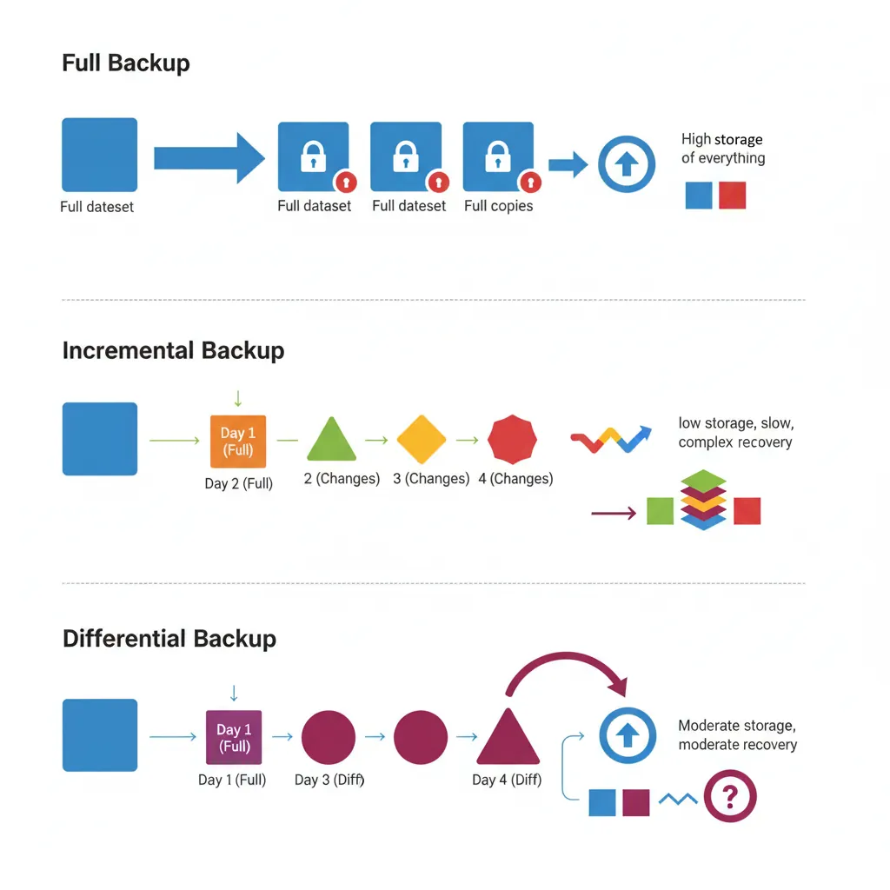
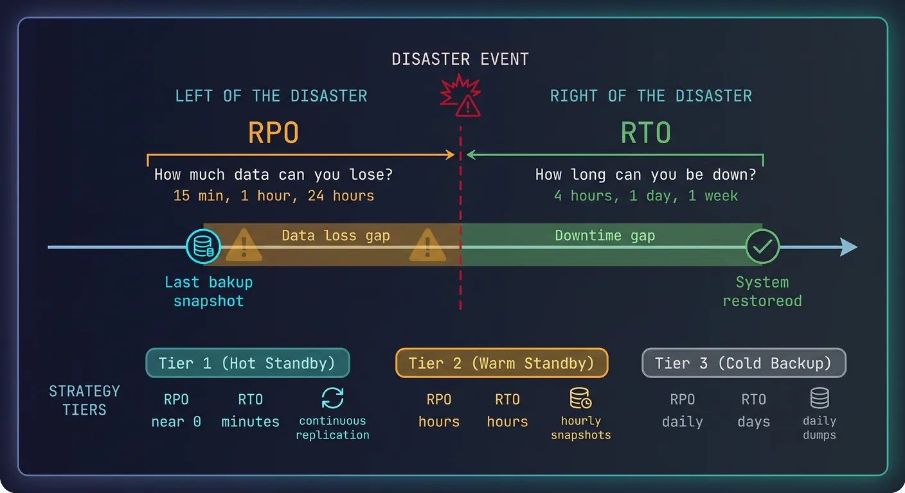
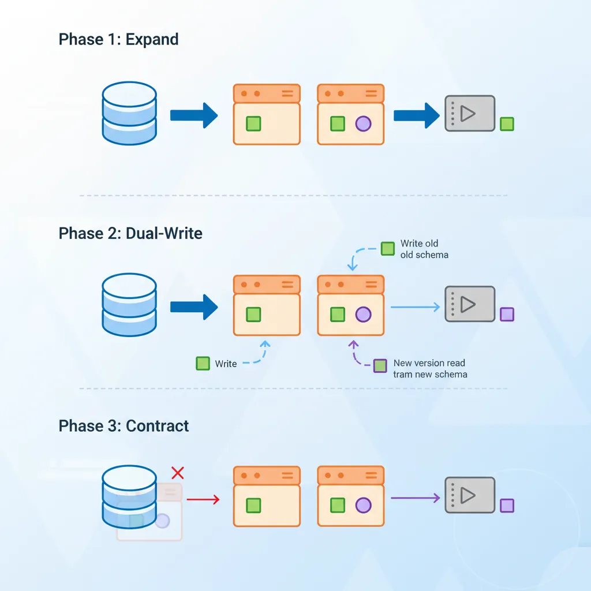

We use cookies to enhance your browsing experience, serve personalized content, and analyze our traffic.
By clicking "Accept All", you consent to our use of cookies. See our
Privacy Policy
for more information.
Complete Database Mastery Part 10: Database Administration & Migrations
January 31, 2026Wasil Zafar38 min read
Master database administration and migrations. Learn backup strategies, disaster recovery, schema versioning with Flyway/Liquibase, zero-downtime migrations, and monitoring best practices.
Database Administration (DBA) is the discipline of keeping databases secure, performant, and available. Whether you're a developer managing your own databases or a dedicated DBA, these skills are essential.
DBA lifecycle responsibilities — from provisioning and monitoring to backup, migration, and disaster recovery
Series Context: This is Part 10 of 15 in the Complete Database Mastery series. We're covering the operational side of database management.
Think of a DBA like a building superintendent: while developers design and build the apartments (schemas), the superintendent keeps the lights on, repairs issues, and ensures the building doesn't burn down (data loss).
Core DBA Responsibilities
Area
Tasks
Frequency
Availability
Backups, failover, monitoring
Continuous
Performance
Query tuning, indexing, resource allocation
Weekly/As needed
Security
Access control, encryption, auditing
Continuous
Migrations
Schema changes, version control
Per release
Maintenance
VACUUM, ANALYZE, index rebuilds
Daily/Weekly
Backup Strategies
Backups are your insurance policy. Without them, a single failure can destroy years of business data.

Backup strategies compared — full, incremental, and differential approaches with storage and recovery tradeoffs
Full Backups
Complete copy of the entire database. Simple but storage-intensive.
Restore to any moment in time—essential for recovering from accidental deletes or corruption.
# PostgreSQL PITR
# 1. Restore base backup
pg_restore -d myapp /backup/base_backup.dump
# 2. Apply WAL logs up to specific time
# recovery.conf (or postgresql.auto.conf in v12+)
restore_command = 'cp /backup/wal/%f %p'
recovery_target_time = '2024-01-15 14:30:00'
recovery_target_action = 'promote'
# MySQL PITR with binary logs
# 1. Restore full backup
mysql -u root -p < full_backup.sql
# 2. Apply binlogs up to a point
mysqlbinlog --stop-datetime="2024-01-15 14:30:00" \
mysql-bin.000001 mysql-bin.000002 | mysql -u root -p
Critical Rule: Test your restores regularly! A backup you can't restore from is worthless.
Disaster Recovery Planning
Plan for the worst: hardware failures, data center outages, ransomware attacks.

Disaster recovery planning — RTO and RPO objectives mapped to backup frequency and failover capabilities
Key Metrics
RTO (Recovery Time Objective): How long can you be down? (e.g., 4 hours)
RPO (Recovery Point Objective): How much data can you lose? (e.g., 15 minutes)
# Apply changes
liquibase update
# Rollback last change
liquibase rollbackCount 1
# Generate diff between databases
liquibase diff --referenceUrl=jdbc:postgresql://localhost/dev
Alembic (Python/SQLAlchemy)
# migrations/versions/001_create_users.py
from alembic import op
import sqlalchemy as sa
revision = '001'
down_revision = None
def upgrade():
op.create_table(
'users',
sa.Column('id', sa.Integer(), primary_key=True),
sa.Column('username', sa.String(50), nullable=False, unique=True),
sa.Column('email', sa.String(255)),
sa.Column('created_at', sa.DateTime(), server_default=sa.func.now())
)
op.create_index('idx_users_email', 'users', ['email'])
def downgrade():
op.drop_index('idx_users_email')
op.drop_table('users')
# Generate migration from model changes
alembic revision --autogenerate -m "Add users table"
# Apply migrations
alembic upgrade head
# Rollback
alembic downgrade -1
Zero-Downtime Migrations
Production databases can't afford downtime. Use these patterns for safe schema changes.

Zero-downtime migrations — the expand-contract pattern for safely evolving database schemas in production
Expand-Contract Migration Pattern
flowchart LR
A["1. Expand
Add New Column"] --> B["2. Migrate
Backfill Data"]
B --> C["3. Switch
Deploy New Code"]
C --> D["4. Contract
Drop Old Column"]
style A fill:#e8f4f4,stroke:#3B9797
style B fill:#f0f4f8,stroke:#16476A
style C fill:#f0f4f8,stroke:#16476A
style D fill:#e8f4f4,stroke:#3B9797
Expand-Contract Pattern
Expand: Add new column/table (old code ignores it)
Migrate: Copy/backfill data to new structure
Switch: Update application to use new structure
Contract: Remove old column/table
-- Example: Rename column (email → email_address)
-- Step 1: EXPAND - Add new column
ALTER TABLE users ADD COLUMN email_address VARCHAR(255);
-- Step 2: MIGRATE - Backfill data
UPDATE users SET email_address = email WHERE email_address IS NULL;
-- Step 3: SWITCH - Deploy app using email_address
-- (Application code change)
-- Step 4: CONTRACT - Remove old column (after app fully deployed)
ALTER TABLE users DROP COLUMN email;
Online DDL Tools
# pt-online-schema-change (Percona Toolkit for MySQL)
# Creates shadow table, copies data, swaps atomically
pt-online-schema-change --alter "ADD COLUMN status VARCHAR(20)" \
--execute D=myapp,t=orders
# gh-ost (GitHub's tool for MySQL)
gh-ost --alter="ADD COLUMN status VARCHAR(20)" \
--database=myapp --table=orders --execute
# PostgreSQL - Many ALTERs are online by default
# But adding NOT NULL with default locks table
ALTER TABLE users ADD COLUMN status VARCHAR(20) DEFAULT 'active';
-- In PG11+, this is instant (no table rewrite)
Dangerous Operations: Avoid these in production without careful planning: DROP COLUMN, change column type, add NOT NULL constraint to existing data.
Routine Maintenance
VACUUM & ANALYZE (PostgreSQL)
-- VACUUM: Reclaim dead tuple space
VACUUM users; -- Standard vacuum
VACUUM FULL users; -- Rewrites table (locks!)
VACUUM ANALYZE users; -- Vacuum + update statistics
-- ANALYZE: Update query planner statistics
ANALYZE users;
ANALYZE users(email); -- Specific column
-- Check bloat
SELECT schemaname, relname, n_live_tup, n_dead_tup,
round(n_dead_tup * 100.0 / nullif(n_live_tup, 0), 2) as dead_pct
FROM pg_stat_user_tables
ORDER BY n_dead_tup DESC;
-- Autovacuum settings (postgresql.conf)
autovacuum = on
autovacuum_vacuum_threshold = 50
autovacuum_vacuum_scale_factor = 0.2
Index Maintenance
-- PostgreSQL: Rebuild bloated index (online in PG12+)
REINDEX INDEX CONCURRENTLY idx_users_email;
-- Check index usage
SELECT indexrelname, idx_scan, idx_tup_read, idx_tup_fetch
FROM pg_stat_user_indexes
WHERE schemaname = 'public'
ORDER BY idx_scan DESC;
-- Find unused indexes
SELECT indexrelname, idx_scan
FROM pg_stat_user_indexes
WHERE idx_scan = 0 AND indexrelname NOT LIKE 'pg_%';
-- MySQL: Optimize table (rebuilds indexes)
OPTIMIZE TABLE users;
-- MySQL: Analyze table (update statistics)
ANALYZE TABLE users;
Monitoring & Alerting
-- PostgreSQL: Active queries
SELECT pid, now() - pg_stat_activity.query_start AS duration, query, state
FROM pg_stat_activity
WHERE state != 'idle'
ORDER BY duration DESC;
-- Long-running queries (kill if needed)
SELECT pg_cancel_backend(pid); -- Graceful
SELECT pg_terminate_backend(pid); -- Force
-- Connection stats
SELECT count(*), state FROM pg_stat_activity GROUP BY state;
-- Database size
SELECT pg_size_pretty(pg_database_size('myapp'));
-- Table sizes
SELECT relname, pg_size_pretty(pg_total_relation_size(relid))
FROM pg_stat_user_tables
ORDER BY pg_total_relation_size(relid) DESC
LIMIT 10;
Database administration is the unsung hero of reliable systems. Mastering backups, migrations, and maintenance ensures your data survives disasters and evolves with your applications.
Continue the Database Mastery Series
Part 9: Redis & Caching Strategies
Understand caching before building backup strategies around it.